01
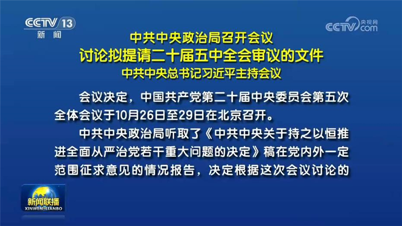
中共中央政治局召开会议 讨论拟提请二十届五中全会审议的文件 中共中央总书记习近平主持会议
中共中央政治局9月21日召开会议，研究持之以恒推进全面从严治党重大问题。中共中央总书记习近平主持会议。


中共中央政治局9月21日召开会议，研究持之以恒推进全面从严治党重大问题。中共中央总书记习近平主持会议。
应美利坚合众国总统特朗普邀请，国家主席习近平将于9月23日至25日对美国进行国事访问。
近日，国家主席习近平复信来华参加中美青年主题交流活动的美国10所高校青年学生。
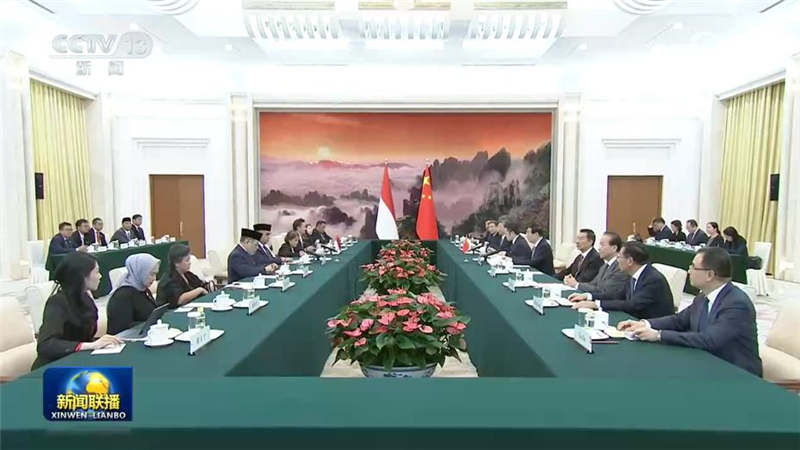
全国政协主席王沪宁21日在京会见印度尼西亚人民协商会议主席穆扎尼。王沪宁表示，去年习近平主席同普拉博沃总统亲切会晤，为中印尼命运共同体建设作出新的战略指引。中方愿同印尼共同落实两国元首重要共识，深化全方位战略合作，加强治国理政经验交流，推动中印尼命运共同体建设不断迈上新台阶。中国全国政协愿同印尼人协加强交流沟通和互学互鉴，为推进两国现代化事业和双边关系作出更大贡献。
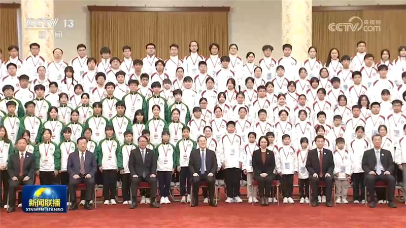
21日上午，中共中央政治局常委、国务院副总理丁薛祥在人民大会堂接见“向国旗敬礼”港澳青少年升旗队代表访京团并合影留念。
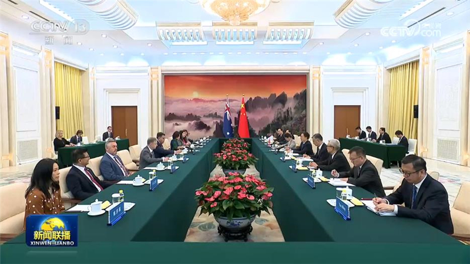
国家副主席韩正21日在京会见澳大利亚联邦议会众议长迪克。韩正表示，中国和澳大利亚互为重要合作伙伴。去年7月，习近平主席会见阿尔巴尼斯总理，为两国关系进一步向前、向好发展指明了方向。中方愿同澳方一道，以两国领导人重要共识为指引，秉持平等相待、求同存异、互利合作的精神，增进战略沟通，深化互利合作，密切多边协调，妥善处理分歧，推进构建更加成熟稳定、更加富有成果的中澳全面战略伙伴关系。
当地时间9月20日，中美经贸中方牵头人、国务院副总理何立峰与美方牵头人、美国财政部长贝森特和贸易代表格里尔在美国纽约举行经贸磋商。双方以两国元首重要共识为引领，秉持相互尊重、和平共处、合作共赢的原则，围绕落实历次经贸磋商共识、促进双边贸易投资等双方共同关心的重要经贸问题，进行了坦诚、深入、富有建设性的交流，并就人工智能有关问题举行对话。
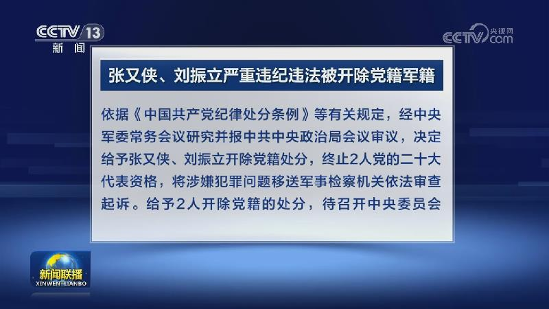
经中共中央、中央军委批准，中央军委纪委监委对中央政治局委员、中央军委副主席张又侠，中央军委委员、军委联合参谋部原参谋长刘振立2人立案审查调查。9月21日，中共中央政治局会议审议并通过中央军委《关于张又侠问题审查结果和处理意见的报告》《关于刘振立问题审查结果和处理意见的报告》。
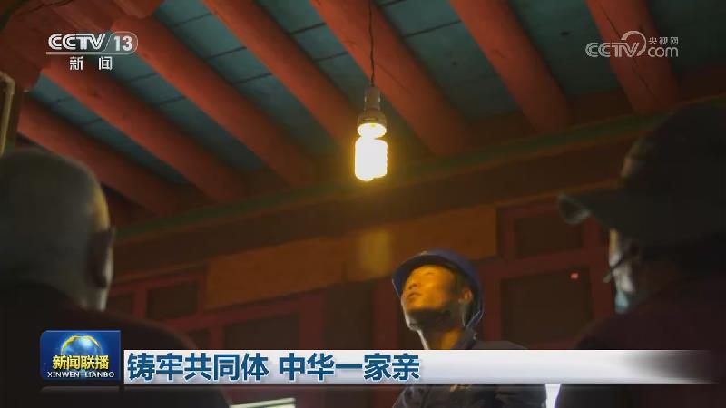
以“促进民族团结进步，奋进伟大复兴征程”为主题的2026年民族团结进步宣传周今天（9月21日）启动。这是民族团结进步促进法正式施行后的首个民族团结进步宣传周。新时代以来，党的民族工作取得历史性成就，各民族携手绘就民族团结一家亲的幸福画卷。
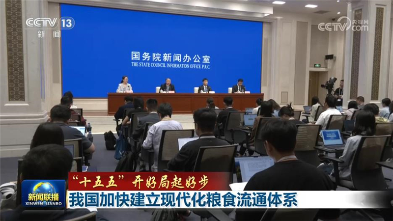
国务院新闻办今天（9月21日）举行“开局起步‘十五五’”系列主题新闻发布会，国家粮食和物资储备局相关负责人介绍守住管好“大国粮仓”，保障国家粮食安全的有关情况。
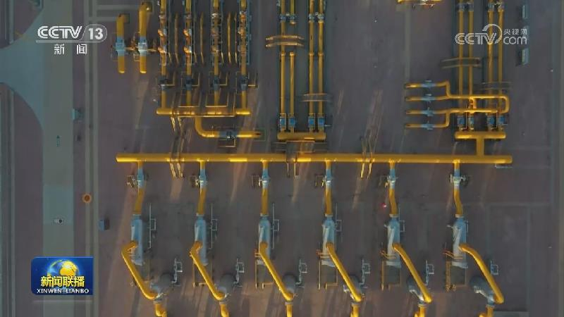
今年以来，我国持续加快油气国家级干线、省级管网和直供管道建设步伐，互联互通、安全高效的油气“全国一张网”加速成形。
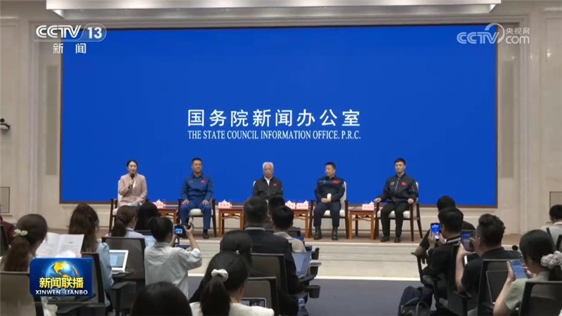
国务院新闻办公室今天（9月21日）举行“新征程上的奋斗者”中外记者见面会，4位航天领域代表围绕“走好新时代太空探索新长征”与中外记者见面交流。分享各自在运载火箭研制、载人航天工程、发射任务保障、空间应用科学等方面攻坚克难、自主创新的亲身经历，讲述一代代航天人接续攻关、勇攀科技高峰的动人故事，生动展现了航天科研团队坚持科技自立自强、加快建设航天强国的奋斗姿态与使命担当。
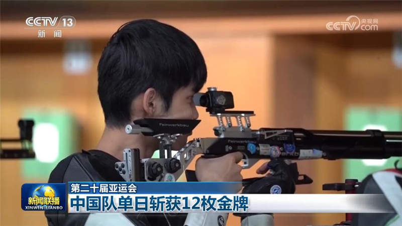
第二十届亚运会今天（9月21日）进入开幕后的第二个比赛日，在射击男子10米气步枪团体决赛中，由张常鸿、盛李豪、马思涵组成的中国队夺得金牌，并打破世界纪录。在个人决赛中，盛李豪成功卫冕10米气步枪冠军。铁人三项混合接力决赛，由张玺瑞、李明旭、林鑫瑜、黄安琪组成的中国队夺得金牌。这也是中国队在该项目上的首枚亚运金牌。武术套路比赛继续进行，刘德文夺得男子太极拳太极剑全能冠军。
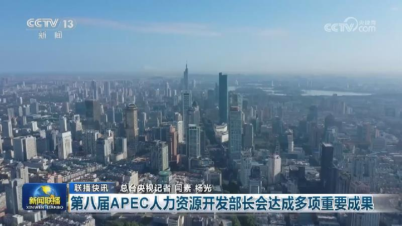
《公共文化服务体系建设“十五五”规划》发布
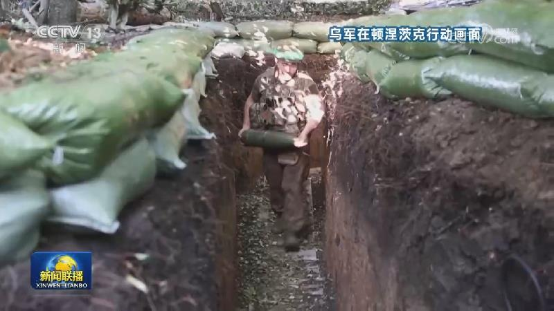
俄罗斯国家杜马，也就是议会下院选举投票工作20日结束。俄罗斯中央选举委员会主席帕姆菲洛娃今天（9月21日）表示，根据对超过95%选票的初步统计结果，执政党统一俄罗斯党在此次选举中获得57.83%的选票，得票领先。在国家杜马450个席位中获得355席，继续成为议会第一大党。最终计票结果将于25日公布。这是自2022年俄罗斯对乌克兰开展特别军事行动以来首次举行全国性议会选举。
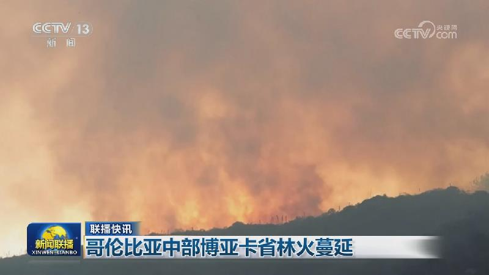
美总统称也门胡塞武装同意不与美交战